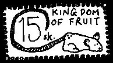

Monday, December the 27th, 2004
back to: title, date or indexes
Here is simple way to jazz up your stamp album. Print out the picture below, snip around the edges, affix a stamp hinge to the reverse side, and stick it into your stamp album. Voila! You have a jazzed-up stamp album of which you can be proud, all thanks to Hooting Yard.
